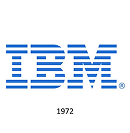
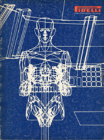
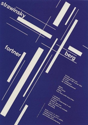
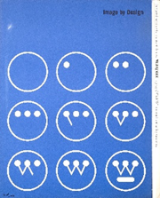

Esempi di utilizzo nella comunicazione visiva
Meta
Marchio Facebook, rebrand del 2019
Paul Rand
Marchio IBM, 1972

Ford Company
Marchio Ford, evoluzione design, 1927
Pino Tovaglia
Copertina "Rivista d'informazione e di tecnica", Pirelli, 1970

J. Müller-Brockmann
Manifesto per l'Orchestra della Tonhalle di Zurigo, 1958

Paul Rand
Westinghouse — "Identity Guidelines: Image by Design", 1960
